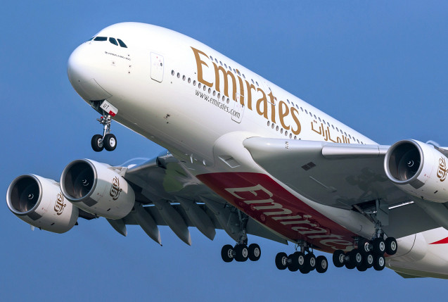

Список 10 найкращих авіакомпаній світу на 2023 рік:
1. Сінгапурські авіалінії
Singapore Airlines втретє визнана найкращою авіакомпанією 2023 року за версією Air Transport World (ATW) за досягнення в авіаційній галузі. Нагороду присуджено за швидке реагування SIA на обмеження COVID-19, здатність залучити 16,78 млрд доларів, заходи щодо скорочення витрат та інноваційні ініціативи щодо підготовки до відкриття кордонів. Стратегічне управління авіакомпанією призвело до рекордних коефіцієнтів пасажирського завантаження, при цьому прогнози вказують на те, що рівні перевищать допандемічні показники на ринках Америки, Європи та Південної Азії.
2. Emirates Airlines
Для тих, хто подорожує економ-класом, Emirates Airlines, що базується в Дубаї, — чудовий вибір. В останні роки Емірейтс розширює свою маршрутну мережу та повітряний флот, додаючи рейси до різних пунктів призначення, включаючи Сантьяго, Панама-Сіті та Мехіко. Крім того, авіакомпанія інвестувала в найсучасніші технології, такі як Boeing 777X і Airbus A380neo. Постійно входить до десятки найкращих авіакомпаній світу.
3. Катарські авіалінії
Qatar Airways, заснована урядом Катару в 1993 році, розпочала свою діяльність у 1997 році з маршруту між Дохою та Дубаєм. В даний час авіакомпанія обслуговує понад 160 напрямків по всьому світу після того, як спочатку зосередилася на розширенні Близького Сходу. У 2000-х роках Qatar Airways розширила свою міжнародну присутність на Європу, Африку, Азію та Америку. Хоча пандемія COVID-19 призвела до скорочення операцій та тимчасового призупинення рейсів за деякими напрямками у 2020 році, авіакомпанія відновила деякі рейси та продовжує відновлюватися.
4. All Nippon Airways (ANA)
Японська авіакомпанія All Nippon Airways (ANA) названа найдорожчою авіакомпанією як в Азіатсько-Тихоокеанському регіоні, так і у світі. ANA досягла визначної пунктуальності 89,79% як у категоріях Global Network, так і в Азіатсько-Тихоокеанському регіоні, продемонструвавши свою відданість своєчасного виконання замовлень. Материнська компанія повідомила про чистий прибуток у розмірі 89,4 млрд ієн (808,5 млн доларів США) вперше за три фінансові роки.
5. Hong Kong Airlines
Національна авіакомпанія Гонконгу вже понад десять років зарекомендувала себе як одну з провідних світових авіакомпаній. Cathay Pacific Airways здобула безліч нагород з 2013 року, зокрема, за експлуатаційну безпеку, яка залишається головним пріоритетом для компанії. Крім того, Hong Kong Airlines вклала значні кошти в забезпечення комфорту пасажирів, представляючи нові літаки, такі як A330, які пропонують чудову аеродинамічну стійкість і просторі салони з високими стелями та широкими сидіннями.
6. EVA Air
Тайванська авіакомпанія, також відома як Evergreen Airways, розпочала свою діяльність із подвійним акцентом на вантажні та пасажирські перевезення. З того часу авіакомпанія розширила свої горизонти, представляючи нові літаки та маршрути для задоволення потреб та переваг своїх клієнтів як на місцевому, так і на міжнародному рівні. EVA Air також представила нові салони преміум-класу та економ-класу на додаток до існуючого парку літаків, пропонуючи пасажирам більш комфортні та розкішні подорожі.
7. Lufthansa
Це 5-зіркова авіакомпанія – національний перевізник Німеччини. Вона є частиною групи Lufthansa, до якої входять такі авіакомпанії, як Austrian Airlines, Brussels Airlines, Eurowings та Swiss International Airlines. За даними Air Advisor, Lufthansa Group перевозила 46,9 млн. пасажирів на рік. 2021 року це зробило її другою за величиною авіакомпанією в Європі. Lufthansa також є одним із п’яти членів-засновників мережі Star Alliance. Авіакомпанія пропонує чудове бортове харчування, розваги, включаючи фільми, серіали, аудіокниги та музику, а також попередню реєстрацію багажу на всіх рейсах.
8. Etihad Airways
Флагманський авіаперевізник Об’єднаних Арабських Еміратів відомий своїм чудовим обслуговуванням в аеропорту та на борту. Вона була сертифікована Skytrax, як 4-зіркова авіакомпанія на основі якості своїх продуктів та обслуговування персоналу. Рейтинг продукту включає комфортні сидіння, додаткові зручності, їжу та напої, розваги в польоті, чистоту та багато іншого, а рейтинг обслуговування охоплює як бортовий, так і наземний персонал. В постанньому рейтингу AirlineRatings.com Etihad Airways посіла третє місце як найбезпечніша авіакомпаніяпоступившись лише торішній переможниці Air New Zealand
9. Garuda Indonesia
Національна авіакомпанія Індонезії визнана 5-зірковою авіакомпанією за чудові продукти та послуги в аеропорту та на борту. Авіакомпанія отримала високі оцінки за зручність крісел, їжу та напої, розваги на борту та чистоту. За даними OAG, постачальника даних про подорожі, крім високоякісних послуг Garuda Indonesia була визнана своєчасною авіакомпанією у світі у 2022 році: 95,63% її рейсів прибувають вчасно.
10. Qantas
Найбільша авіакомпанія Австралії працює на внутрішніх та міжнародних рейсах. Вона має багату історію і була заснована у 1920 році. Авіаперевізник є третьою найстарішою авіакомпанією, яка досі працює. Безпека є основним пріоритетом для Qantas. Крім того авіакомпанія незмінно входить до числа найбезпечніших авіакомпаній світу.